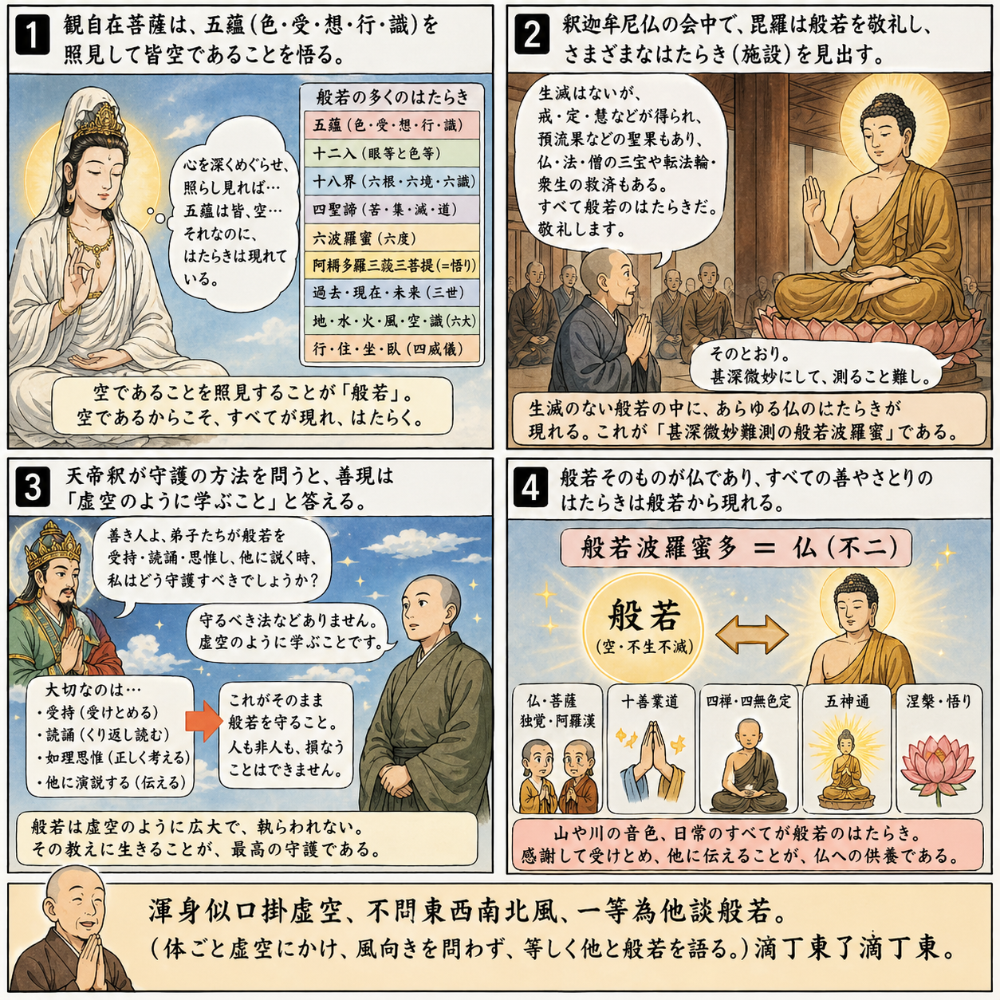
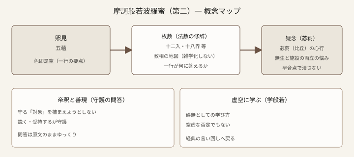
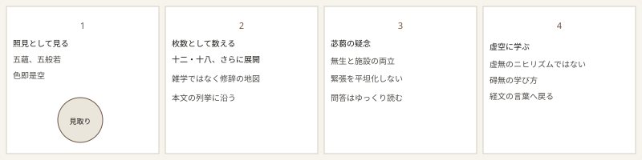

七十五巻 巻一覧
正法眼藏第二 摩訶般若波羅蜜
原文・現代語訳の全文は 全文ページを参照してください。
この巻の紹介（導入）
本巻は、観自在菩薩の「行深般若波羅蜜多」と「照見五蘊皆空」から入り、般若を枚（まい）として数え立て、戒・定・慧や十二入・十八界・四諦・六波羅蜜・三世・六大などへと展開しつつ、最後には而今現成の一語へ寄せていきます。後半は大般若経系の問答（苾蒭の念、帝釈と善現の守護、学般若＝学虚空）を重ね、偈と釈尊の説法で締めます。禅問答の「公案」というより、経典の一行を身体と法数で読むタイプの論じ方です。
語彙の足場
- 五蘊：色・受・想・行・識。ここでは「五枚の般若」と重ねられます。
- 照見：見ることではなく、全体が照らしとして働く、というニュアンスで読むと道元の文に沿いやすいです。
- 施設可得：経典に語られる位相・果・蘊などが、「無いのに」言葉として立ち上がるさま。
- 敬禮：礼拝。苾蒭の念と、般若の「無」との関係が論点になります。
- 学般若・学虚空：善現の答え「当如虚空学」—「空っぽを学べ」ではなく、碍無の学び方の比喩として受け取るのが安全です。
原文（要点の抜粋）
以下は doc/正法眼蔵.txt に基づく抜粋です。漢字史資料の表記（新旧字体など）そのままです。原文の参照元:
https://shomonji.or.jp/zazen/doc/genzou.html
觀自在菩薩の行深般若波羅蜜多時は、渾身の照見五蘊皆空なり。五蘊は色受想行識なり、五枚の般若なり。照見これ般若なり。この宗旨の開演現成するにいはく、色卽是空なり、空卽是色なり、色是色なり、空卽空なり。百草なり。萬象なり。般若波羅蜜十二枚、これ十二入なり。
しかあれば、學般若これ虛空なり、虛空は學般若なり。
図解（イラスト）

図解（概念図・SVG）
一枚の SVG で、照見→枚数の展開→苾蒭の念→守護問答→虚空の学び、という大きな骨格だけを示します（詳細は必ず原文で確認してください）。

概念マンガ（SVG 4コマ）
比喩・場面の視覚化用です。教義の唯一の根拠にはしません。

深掘り（教育的メモ）
- 枚数の修辞：般若を「十二枚」「十八枚」など数えるのは、教相を遊戯的に総ざらいする道元の筆法です。数え方そのものを暗記するより、「どの法門がどの語に対応するか」を追う読み方が向いています。
- 苾蒭の念：「無生滅」と「施設（位相・果など）」の両立に悩む心を肯定しつつ、それ自体がすでに甚深般若である、という跳躍があります。ここを「矛盾の解消」と早合点しないで、何度も読み返す価値があります。
- 守護と虚空：帝釈の「守りたい」は善現によって「守る対象なし」へ返され、結局は説く・受持する行為が守護だと示されます。現代語では「コントロールではなく関与」と言い換えられますが、原文の硬さも味です。
確認（形成評価）
問いの種
- 「枚」で数えることは、あなたにとって分かりやすいか、違和感があるか。
- 守護の問答を、デジタル情報のバックアップやプライバシーに重ねて考えてみるとどうか（比喩の限界にも注意）。